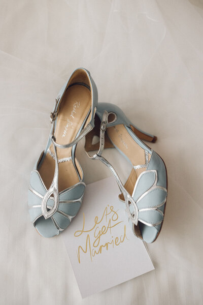

As an Essex-based wedding videography team, we're lucky to have some of the country's most beautiful venues right on our doorstep. From the rolling hills of the north to the stunning coastline, Essex offers a huge variety of backdrops. Here are some of our absolute favorite places to film.
Gaynes Park
Set in a historic private estate, Gaynes Park is a truly unique venue. The Orangery, with its floor-to-ceiling glass, provides incredible natural light for ceremonies, while the Gather Barn is a rustic dream. The views across the London skyline in the distance are just the cherry on top.

Braxted Park
For sheer grandeur, Braxted Park is hard to beat. The long driveway leading up to the house is a videographer's dream. The walled garden offers a stunning, secluded spot for ceremonies and portraits, while the ballroom is perfect for a big celebration.
Gosfield Hall
A former royal residence, Gosfield Hall exudes history and elegance. The grand staircase and the ornate ballroom provide a sophisticated backdrop for any wedding film. It's the kind of place that makes every shot feel like it's from a period drama.
Crondon Park
If you're looking for a beautiful barn venue, Crondon Park is a fantastic choice. The Baronial Hall is full of character, with its exposed beams and warm lighting. It's a great space for capturing a cozy, festive atmosphere.
The Essex Coast
Don't forget about our stunning coastline! Locations like Southend and Mersea Island offer a completely different vibe, with beach huts, sailboats, and beautiful sunsets. It's perfect for couples who want something a bit more unconventional.